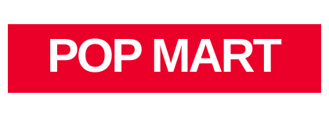
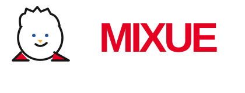
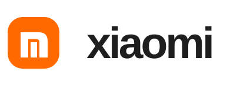
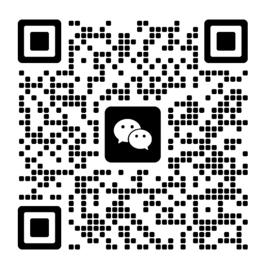

员工忙到加班，
人效却提不上去。
复制粘贴、整理 Excel、跨平台查订单、重复回复客户，占掉大量时间；一忙就得加人，业务却没形成规模化能力。
正在付出的代价人工成本涨，产出不跟涨
曾服务 泡泡玛特、蜜雪冰城、小米 等国内头部品牌，以及 PatPat、VELOTRIC、ELEGOO 等多家出海企业负责公司社交直播主要营收项目的开发与迭代，支撑年营收过亿的核心业务，日均稳定服务 80 万活跃用户。
10 年产品研发与工程实践，经历跨境电商 SaaS、AI Agent 客服、营销自动化和复杂业务系统。擅长把业务需求转化为可上线、可持续迭代的数字产品。
软件研发与产品实践经验
AI Agent / AIGC 应用开发经验
曾将所负责项目 FCP 从 3.2s 优化至此
简历记录的工具类代码产出效率提升
对中小企业来说，最贵的往往不是软件，而是每天都在发生、却没人解决的重复劳动与协作内耗。
复制粘贴、整理 Excel、跨平台查订单、重复回复客户，占掉大量时间；一忙就得加人，业务却没形成规模化能力。
工具买了、员工培训了、模型也试了，但最关键的工作流程仍靠人工，没人说得清先改哪一步、投入能换来什么。
报价规则、客户处理办法、业务 SOP 藏在群聊和个人脑海里；新人上手慢，交接一断，同样的错误反复发生。
销售、库存、客服和财务数据散落在多个平台与表格里，口径对不上、汇总总是滞后；看不清利润、缺货风险和增长机会。
信息在微信、Excel 和多个系统之间来回搬运，责任人不清、进度不透明，一旦遗漏或出错，查原因还要反复追问。
先找出最耗人、最易错、最影响收入的那条流程，再决定要不要用 AI。
理想状态不是“员工会用 AI”，而是公司开始拥有一套能自己跑起来的数字能力。让知识、流程、工具、权限与反馈形成真实业务闭环。
从具体业务问题开始 ↗泡泡玛特、蜜雪冰城、小米的品牌服务经历。具体项目、个人职责与可公开成果将在资料核实后补充。



从智能客服、工作流到知识库、平台集成与声音社交，以下展示均来自本人任职期间参与的实际产品场景。


从用户体验、业务增长到团队效率，尽量用可验证的结果检验技术选择。
自研 H5 调试工具链，涵盖 Log、网络请求、本地数据、Schema 事件等调试能力。
抱抱项目工作成果之一，持续参与业务运营活动及增长体系建设。
通过性能指标分析、异常兜底、骨架屏等方式改进用户体验。
不是先报价、再写代码。先看懂实际工作，再确认要解决的问题，最后以可验证的成果完成上线。
交付：沟通纪要
交付：工作流程图
交付：需求诊断报告
交付：改造方案与报价
交付：可演示系统与测试结果
交付：上线系统与交付文档
如果你正在考虑业务流程优化、AI 应用落地、智能客服或内部系统开发，可以先从一次简单沟通开始。
